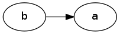
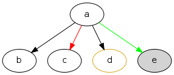
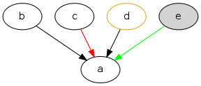
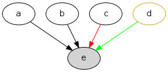
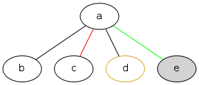
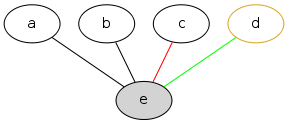

Donuts: Graph DSL for Common Lisp

Table of Contents

1 はじめに
DonutsはCommon Lispのためのグラフ作成ドメイン固有言語（DSL）です。 lispでちょっとしたグラフを描くことを目指し、Donutsは造られました。 DonutsはS式で記述されたグラフ構造をDot言語に変換し、Graphvizによって画像に変換します。 ざっくり言うとDonutsはLispがDot言語を吸収した言語です。 Lisp組み込みの機能を用いることによって、Dot言語単体では困難だったことを容易に達成することができます(ex.小さなプログラム)。
Donutsの使い方は簡単です。
<> でノードを作り、 -> で2つのノード間にエッジを張り、 & でノードやエッジ（やグラフ）を束ねグラフを作り、 $$ で画像を出力します。
例えば、左下のコードをLispのREPLに入力すると、ビューアが起動し右下の画像が出力されます。

($$ (let ((o (<> "o" :style :filled :fillcolor :chocolate4))) ;チョコドーナツを作る (& (:label "Hello, Donuts!" :labelloc t :size "3,3") ;グラフを生成する (--> "d" o "n") ;ノード間にエッジを張る (-> "n" "u" :style :dotted) ;点線のエッジを張る (--> "u" "t" "s") ;ノード間にエッジを張る (~ "d" o "t") (~ "n" "s" "u")))) ;ノードの高さを揃える
すぐにDonutsでグラフを描き始められるように。 Donutsの文法はDot言語のものと似ています。 そこで、Dot言語になじみのある方ならDot言語との類推から、すぐにグラフを描き始めることができるよう、Examples from Graphviz manualの章を用意しています。 Dot言語になじみのない方でも、もちろん大丈夫です。 Donutsですぐにグラフを描くことができるように、チュートリアルの章があります。
DonutsはMITライセンスの元で配布されています。 したがって、あなたの望みが健全な常識の範囲内であれば、自由にDonutsを活用することができるはずです。 また、Donutsの使用の結果として生じた、いかなる不利益に関しても作者は責任を持ちません。 ライセンスの正確な文言についてはソースコードのヘッダー部分をご確認ください。
Donutsの最新バージョンは0.2.8です。 現在のところDonutsはベータ版です。 今後の更新予定はToDoをご確認ください。
DonutsにはGraphvizに比べ実行時のオーバーヘッドが存在します。 S式で記述されたグラフをDot言語のグラフに変換するためです。 したがって、 Donutsによって得られる抽象や手軽さは、実効速度とトレードオフの関係にあります。 Donutsは まだ最適化していません が、たとえ最適化しても刻一刻と変化する大量のデータからグラフを逐次作成するといった、リアルタイムのグラフ生成などには向かないだろう、と考えています1。
Donutsは拡張性を重視して設計されています。
Donutsのコアはグラフ作成に関する基本的操作から構成されています。
グラフ作成に関する基本的操作とは、 ノードを構築する操作 <> 、 エッジを構築する操作 -> 、 グラフを構築する操作 & の3つの操作のことです。
およそいかなるグラフ構造もこれら3つの基本操作のみから作り上げることができます(グラフ画像の見た目やコーディングの手間を気にしなければ)。
また、Donutsはなるべくlispとぶつからないことを重視して造られています。
したがって、複雑なグラフ作成機能は、基本操作とlispの機能を組み合わせることで、
ユーザが自分で好きなように追加できるはずです(ex.小さなプログラム)。
Donutsには実用的操作も加えられています。 実用的操作とは、主として基本操作を組み合わせた 実用目的の便利機能 のことです。 基本的操作だけを使ってグラフを描くこともできます。 しかし、実用的な操作も使用することで、より多彩なグラフを、より手軽に描くことができます(cf.ユーティリティ集)。
2 インストール
2.1 動作確認
動作確認済みの環境。
- OS
- linux-2.6.32-5-686
- CL処理系
- sbcl-1.0.55, ccl-1.7-r14925M(LinuxX8632)
2.2 システム依存
2.2.1 外部システム
- Graphviz by AT&T Research Labs
- 画像を見るための適当なビューア
2.2.2 Common Lisp ライブラリ
- quicklisp by Zachary Beane
- cl-ppcre by Dr. Edmund Weitz
- trivial-shell by Gary Warren King
2.3 開始設定、動作確認
CL-USER> (push #P"/path-to-your-donuts-directory/" asdf:*central-registry*) CL-USER> (ql:quickload :donuts) CL-USER> (in-package :donuts) DONUTS> (dot-output (&& (-> 1 2))) ;次のようなdotコードが標準出力に表示されたらOK ; digraph graph_ID_103 { ; 1 -> 2; ; } DONUTS> ($$ (&& (-> 1 2))) ;ビューアが起動し、下の画像が出力されたらOK

3 Donutsの考え方 — <>, ->, &
（ 注： この章は、なぜDonutsのユーザインターフェイスがこうなっているか、についての章です。 この章はやや抽象的な部分が多いので、退屈だと感じた場合や、とにかく手っ取り早くグラフを作成したい方は、 次章のチュートリアルを読むことをおすすめします。）
3.1 Donutsのゴール
Donutsのゴールは、Common Lispでグラフ作成を なめらかに 行えるようにすることです。 「なめらかに」とは Lisp的な思考の枠組を切り替えずに ということを意味します。 つまりDonutsの達成したい目標は、 Lispコード内であたかもC言語でコーディングするかのように思考を切り替えずにLispの考え方の枠組みそのままでグラフ作成を可能にすること です。
そもそも、グラフを作成するだけなら、GraphvizなどのDot言語アプリケーションをそのまま使えば済む話です。 それにもかかわらず、上のことがらをゴールに設定し、Donutsを造った一番の理由は グラフを描くLispプログラマの生産性の向上のため です。 以下で詳しく説明します。
おおよそいかなるプログラミング言語を使用したとしても、その言語のシンタックスやセマンティックス、設計思想、伝統文化に根ざした、言語特有の思考習慣の概念的枠組みの中でプログラマはプログラムを書きます。 LispとJavaによる例を挙げましょう。
Lisp ：
CL-USER> (princ "Hello World") Hello World "Hello World"
演算がS式の先頭であり、思考の中で述語がまず浮かぶ。 無意識のうちに開き括弧 ( と演算princをキーボードに打ち込む。 主語が浮かび、被演算対象"Hello World"と閉じ括弧 ) を打ち込む。 もちろんプログラマ一人一人では細かい順番は異なる。 しかし頭の中の思考の流れ、述語—>主語は同じはず。
Java ：
// in HelloWorld.java public class HelloWorld { public static void main(String[] args) { System.out.println("Hello World"); } } // in shell $ javac HelloWorld.java // HelloWorld.javaをコンパイルする $ java HelloWorld // HelloWorldを実行する Hello World
いろいろたくさん考える。 頭の中の思考の流れは、主語—>述語。
この例で挙げたようなことは、単なる思考の習慣に過ぎず、どれが優れており、どれが劣っているという絶対的なものではありません。 しかし、プログラマの 生産性に大きく影響します 。 これはある言語のプログラマが他の言語のプログラマと比べて生産性が高い（または低い）という意味で言っているのでは ありません 。
私が 生産性に大きく影響する という言葉で表したい意味は次のことです。 あるプログラミング言語でコーディング中のプログラマが、別なプログラミング言語に切り替えコードを書きはじめるには、文法の切り替え以前に思考の枠組の切り替えが必要です。 そして思考の枠組の切り替えは脳をかなり疲れさせるものであり、 思考の枠組を切り替える度に疲労のため生産性が落ちていく という意味です。
ではなぜ、コーディング途中で言語を換え、思考の枠組を切り換えねばならないのでしょうか？
ある言語Aのコードを書きながら途中で別な言語Bのコードを書くことの一番大きな理由は、言語Aの備えていない利点や機能を言語Bが備えているからです。 例えば、cffiを使うのはLispよりCの方が実効速度が早いという利点があるからです。 同じように、Lispでコードを書きながらPostScriptを使うとしたら、Lispには画像を作成し出力する機能がないからです。
したがって問題は、 Lispにはグラフ作成の機能がなく、代わりに他の言語を使うと思考の枠組の切り替えのために生産性が落ちてしまう ことです。 この問題を解決するために、 Common Lispでグラフ作成を「なめらかに」行えるようにすること こそが、Donutsのゴールなのです。
3.2 Donutsの構築指針
ボトムアップで[プログラムを]書いたとき、たいてい最後には独特なプログラムに行き着く。
単一でモノシリックなプログラムの替わりに、より抽象的なオペレータを持つ大きな言語と、
それ[大きな言語]で書かれた小さなプログラムを手に入れるはずだ。
…
Lispは拡張可能なプログラムを書くために、とりわけみごとな言語である。
なぜなら、Lispそれ自体が拡張可能なプログラムだからだ。
もし、この拡張可能性をユーザに譲り渡すようなLispプログラムを書くなら、
労力なしに拡張[可能]言語を実質的に手に入れる[ことができる]。
— Paul Graham, On Lisp2 ,pp.4–5.
前節で設定した目標を達成するために、どのような指針の基でアプリケーションを構築すると、うまくいくでしょうか？
採用した構築指針は Lispの拡張を目指す というものです。 これは、「いっちょCLOSやloopやformatに匹敵するものをこさえるべぇ」というようなビッグドリームを語っているのでは ありません 。
ポールグレアム氏が著書On Lispで提唱している ボトムアップデザイン によるプログラミング技法を指針として、アプリケーションを造っていくということです。 ボトムアップデザインについては氏がOn Lispの中で詳しく解説しています。 ここで私なりにボトムアップデザインのエッセンスを濃縮し、まとめてみると次のようになります。
- アプリケーションに関する必要最低限の機能( 基礎的対象 や 基本操作 )のみをLispに追加し、それ以外の複雑な機能はLispに任せる。
- 具体的な関数やマクロを Lispの上に 積み重ねていくことによって、抽象的な機能を実現する。
- 新しく追加する機能はなるべく 既存のLispとぶつからないもの にすることを心掛ける。
- Lispでボトムアップに構築されたプログラムは自然に 拡張可能性 を備える。
1–3はボトムアップデザインを行うためのガイドライン、4はボトムアップデザインの利点です。 いずれの項目もLispでプログラムを書いたことのある方なら、当たり前だと感じるものでしょう。 しかし、ここで4の拡張可能性について、もう少し掘り下げて考察していきたいと思います。 なぜなら、4こそがLispを他の言語と違う、まったく異質なものにしていると私は考えるからです。 そして、この拡張可能性をアプリケーションに付与することで、「なめらかな」アプリケーションを造ることができると私は考えているからです。
重要なことは「他の言語の機能をLispで実現するということは、単にその機能のみがLispで実現されるということにとどまらない」ことです。 追加された機能とLispの機能との相乗効果によって、追加した機能を持っていた元の言語では考えることさえできなかったことが可能になるのです。
その一番のものが拡張可能性です。 Lispの拡張可能性を支える最大の機能はマクロ機能です(他にも関数、REPL、CLOSなどの機能も拡張可能性を支えるが最重要はマ・ク・ロ)。 マクロ機能の存在によって、Lispでは他の言語の機能を容易に実現することができます。 しかし、それだけにとどまらず、 実現した機能もマクロ機能を利用することができる のです。
このことは荒っぽく言うと、機能を実現するためにLispに吸収した言語に、実質的にマクロ機能を加えることに他なりません。 例えば、Dot言語にはマクロ機能はありません。 ところが、LispでDot言語を吸収し、Lispでグラフ作成機能を実現すると、マクロ機能を備えた環境でグラフ作成ができるようになるのです。 つまり、マクロが伝播するのです。
今、議論のために取り上げたのは、マクロ機能だけです。 しかし実際は、関数を定義すること、REPL、CLOS、入出力機能など、ありとあらゆるLisp機能のもとで、グラフ作成ができるようになるのです。 これらの機能はDot言語が備えていないものであり、Dot言語でグラフを作成する際には利用できなかった機能です。 これをスローガン的にまとめると Lispに吸収されたものは、またLispとなる と言えるでしょう(まるで映画「遊星からの物体X」に出てくるエイリアンみたいでワクワクしますね)。
何かの作業中に「この言語のこの機能、便利なんだけど、もう少し自由に拡張することができたらな」と思うことがあるかもしれません。 しかし、それは簡単に達成することができます。 単にLispにその機能を吸収させればよいだけです。 Lispの上に実現されたその機能は、基盤であるLispの拡張可能性を備えることができるのです。
この節の最後に、上のボトムアップデザインが含意している(と私が考える)内容をまとめると、次のようになります。
Lispは他の言語Lを吸収し、その言語が実現している機能Xを獲得することができる。結果、Lispには機能X'が追加される。しかし、この機能X'は、もはや言語Lの機能Xをはるかに超えたものになっている。 なぜなら、機能X'は機能Xと異なり、すべてのLisp機能を利用できるからである。
3.3 "グラフ作成"の抽象化 — ユーザインターフェイスの設計1
[数学の]関数と[コンピュータの]手続きの間の差異は、
ものの性質の説明と、ものの行い方の説明との間の全般的な相違を反映している。
あるいは、実際のところ、時折言及されるように、宣言的知識と命令的知識との間の相違である。
通常、数学では宣言的な(何であるかの)叙述に関心を持つのに対し、
計算機科学では命令的な(どう行うかの)叙述に関心を持つ。
— Harold Abelson and Gerald J. Sussman, with Julie Sussman, SICP3 ,section 1.1.7.
ボトムアップにプログラムを書くために、グラフ作成に最低限必要な 基本操作 と 操作される 基本的対象 とは、どのようなものでしょうか？ "グラフ作成" を抽象化して、それらを探していきました。
ここで、まず注意してほしいことは、プログラムを書くために "グラフ作成" を抽象化するのであって、数学的な問題を解くために "グラフ" を抽象化するのではないことです。 数学的な問題を解くには抽象化されたグラフ構造を扱い、 グラフ構造を持つすべてのものに対し、これこれの命題が成り立つかどうか を証明します。 しかしながら、コンピュータにグラフ作成を命令するプログラムを書くためには、 そもそもグラフ構造を作るにはどうするか を探さねばなりません。
ところで、 探す と言っても、答えが1つに確定している未知のものを探すと言っているわけではありません。 ここでの 探す という言葉の意味は、どのような対象や操作を基本とすれば ユーザインターフェイスがシンプルで使いやすく美しいものになるか探す ということです。 したがって、以下の議論を論理の面だけから正当化することはできません。 以下の議論は、それを踏まえたことでよいものができたかどうか、という結果の観点によってのみ判断される発見的なものです。
まず、基本的対象から探していきました。 その結果、グラフ作成に最低限必要な基本的対象を ノードのアイデンティティ にすると、シンプルで良いのではないかと考えました。 それは大体つぎのように連想した結果です。
「基礎的対象はグラフという実体が何から構成されているかに基因する。 グラフは、ノードとエッジという実体によって構成されている。 では、ノードやエッジは何から構成されているか。 エッジは2つのノードから、ノードはノードのアイデンティティから構成されている。 ノードのアイデンティティとは、2つのノードを区別するときに必要になるものである。 グラフ中の2つのノードを場所によって区別することはできないので、ノードの内部構造というアイデンティティの違いで区別する。」
次に、基本操作を探していきました。 基本的対象をノードのアイデンティティ（内部構造）に設定したので、それにどのような操作を加えていくとグラフが得られるか、というように先程と逆の方向で考えていきました。 結果、次の3つの操作を基本操作にすると、すっきりして使い勝手が良いと考えました （—>の左が被操作対象、右が操作後の対象。 * は'と'の代わりです）。
- ノード構築操作 ： ノードのアイデンティティ —> ノード
- エッジ構築操作 ： ノード * ノード —> エッジ
- グラフ構築操作 ： いくつかのノード * いくつかのエッジ * いくつかのグラフ —> グラフ
ここで、グラフ構築操作によって操作される対象にグラフも入れた理由は、「つながっていない2つのグラフから構成されるものも、またグラフである」と考えたからです。
さて、グラフ作成のむずかしい部分は、自分ではじめから作るよりも、Graphvizを用いることにしました。 Graphvizのマニュアルを読んでみたところ、おそらく、Graphviz製作者の方も上と同じようなことを考えていらっしゃったのだろうと思います （もちろん、Graphviz製作者の方のほうが、私よりも先にもっと深く考え尽くしていらっしゃったということは言うまでもありませんが）。 ノードのアイデンティティとして、 属性 が用いられており、エッジやグラフにも属性が設定されていました。
エッジにアイデンティティがあれば、2つのノードの間に2本以上のエッジを張ることもできるようになります4。 つまり、エッジやグラフに属性があれば、グラフの見えを多様なものにすることができるのです。 そこで、Graphvizとの兼ね合いも考えて、以下のものをDonutsの基本対象と基本操作にすることにしました。
- ノードの属性
- ノードの名前や5、ラベル、色、形など。
- エッジの属性
- エッジの名前や、ラベル、色、形など。
- グラフの属性
- グラフの名前や、ラベル、色、形など。
- ノード構築操作
- ノードの属性 —> ノード
- エッジ構築操作
- ノード * ノード * エッジの属性 —> エッジ
- グラフ構築操作
- いくつかのノード * いくつかのエッジ * いくつかのグラフ * グラフの属性 —> グラフ
3.4 図形的な関数名やマクロ名 — ユーザインターフェイスの設計2
さて、基本対象や基本操作は決まりましたが、それをlisp内でどのような名前で表すかは、まだ決まっていません。 そこで、次の2点：
- グラフ構造が一目瞭然となるような視覚的効果 、
- 使用頻度の高い名前を短くすることによる、グラフ作成におけるコーディングとリーディングの両コストの低減 、
を考慮し、関数名やマクロ名は図形的なものを採用することにしました。
その結果、出来上がったDonutsの関数やマクロには、 下の表のように図形的な名前を多く使用しました。
ノード構築操作に <> 、エッジ構築操作に -> 、グラフ構築操作に & をそれぞれ割り当てています。
| コンストラクタ | オペレータ | ユーティティ | |
|---|---|---|---|
| グラフ | &, [&] | with-graph, && | |
| エッジ | ->, –– | with-edge, ––>, ->>, ==>, <-, <==, ?, -<, >-, –––, O | |
| ノード | <>, [] | @, rank | with-node, ~ |
| その他 | dot-output, $ | dot-pprint, $$ |
抽象的にグラフを描くのであれば、3つの基本操作 <>, ->, & だけで十分です。
しかし実際には、グラフを修飾したりコーディングの手間を省くために、基本操作以外の 実用的な操作 があると便利です。
<>, ->, & 以外の操作はそのような実用目的の便利操作です。
それらの操作の詳細な意味はチュートリアルまたはリファレンスマニュアルを参照してください。
以上でDonutsの考え方の章は終わりです。 抽象的で読みづらい章を最後まで読んでくださって、ありがとうございます。 なるべく分かりやすい文章を心がけて書いたつもりですが、不明瞭な点や論理的展開の弱い点などは、すべて私の責任です。 もしよろしかったら、Donutsを使用した感想をお聞かせいただければ幸甚です。 特に、実効速度、使い勝手はどうか、実用操作のバランスはどうか、等の貴重な情報をいただけたら改良に役立てることができますので、大変ありがたいです。
4 チュートリアル
Donuts使用法：
- ノードコンストラクタ
<>でノードを生成する。(<> label) ＝＞ node - エッジコンストラクタ
->で2つのノードを結ぶ。(-> node1 node2) ＝＞ edge - グラフコンストラクタ
&&でエッジやノードやグラフを束ねグラフを生成する。(&& . nodes-edges-graphs) ＝＞ graph - シェルインターフェイス
$$でグラフをビューアに出力する。($$ graph) ＝＞ NIL ;ビューアに画像が出力 dot-outputでグラフのdotコードを標準出力に表示する。(dot-output graph) ＝＞ NIL ;標準出力にdotコードが表示
（ 注：
この章内のコードの大部分は、説明のため、グラフ型のオブジェクトを生成する部分のみ載せてあります。
グラフオブジェクトのdotコードを標準出力で見るには、 (dot-output グラフオブジェクト) のように dot-output を使う必要があります。
また、 dot-output の代わりに dot-pprint を用いると整形されたdotコードを見ることができます。
グラフオブジェクトの画像を直接ビューアで見るには、 ($$ グラフオブジェクト) のようにシェルインターフェイス $$ を使うと便利です。
詳しくは出力の節を参照してください。 ）
4.1 シンプルなグラフ
(&& (-> (<> "Hello") (<> "World")))

上のコード全体が表す意味は、 Helloとラベルされたノードから、Worldとラベルされたノードへのエッジを持つ有向グラフを生成せよ というものです。 コードの内容を詳しく解説します。
まず、S式 (<> "Hello") の意味は、 Helloとラベルされたノードを生成せよ です。
<> を ノードコンストラクタ と呼んでいます。
ノードコンストラクタ <> は、引数として文字列や数値を取り、それらでラベルされたノードを生成します。
オプショナルな引数である属性キーワードによって属性値を指定することで、多様なノードを生成することもできます
（属性については次節で説明します）。
説明のため (<> "Hello") によって生成されたノードを、ノードHelloのように記します（ノードWorldも同様です）。
次に、S式 (-> (<> "Hello") (<> "World")) の意味は、 ノードHelloとノードWorldを矢印で結んだエッジを生成せよ というものです。
説明のため (-> (<> "Hello") (<> "World")) によって生成されたエッジを、エッジHello->Worldのように記します。
-> を エッジコンストラクタ と呼びます。
エッジコンストラクタ -> は、ノード2つを引数に取りエッジを生成します。
<> と同様に、オプショナルな属性キーワードによって、生成されるエッジの属性を指定することもできます。
また、 -> は、略記として、ノードの代わりに文字列や数値も引数に取ることができます。
その場合、文字列や数値をラベルとするノードが自動生成されます6。
つまり上のコードは、
(&& (-> "Hello" "World"))
のように、簡略化することもできます。
最後に、S式 (&& ****) の意味は、 グラフ構成要素****を束ねたグラフを生成せよ というものです(****は、任意の数のエッジやノードやグラフ)。
&& は、任意数のグラフ構成要素を引数に取りグラフオブジェクトを生成するマクロで、 グラフコンストラクタ と呼んでいます。
この例では、グラフ構成要素としてエッジHello->Worldが && に与えられています。
その結果、ノードHelloからノードWorldへのエッジを構成要素とする(有向)グラフが生成されています。
ところで、 && の引数であるグラフ構成要素の中にグラフが含まれていることに、少し奇異な印象を受けるかもしれません。
これは 連結していない2つのグラフもまた1つのグラフである という考えの基に、Donutsが設計されているためです。
そのため、グラフコンストラクタ && は、グラフも引数に取ることができるようになっているのです。
そこで、グラフに構成要素を追加する場合、次のような方法を用いることができます。
(setf h (&& (-> "Hello" "World"))) (&& h (-> "こんにちは" "World"))
上の行で、変数hにエッジ'Hello->World'で構成されるグラフを束縛しています。 下の行で、hに束縛されたグラフと、'こんにちは->World'で構成される新たなグラフを生成しています。 結果、新しいグラフは下のように、'こんにちは->World'がグラフhに追加されたものとなります。

4.2 ラベル

4.3 属性
属性 とは、色や形など様々な性質のことで、それぞれのグラフ、ノード、エッジに付随するものです。 前節までで扱ってきたラベルも実は属性の一つです。 属性の値を指定することで、グラフの見えをさまざまに変化させることができます。
次のコードによって生成されるグラフは、下の様に出力されます(グラフ属性値を指定するには && ではなく & を用います)。
コードの内容を詳しく見ていきましょう。
1: (& (:label "Proparty Example") 2: (-> "a" "b" :color :red) 3: (-> "a" (<> "c" :shape :box) :color :blue) 4: (<> "d" :shape :circle))

まず1行目、グラフコンストラクタ && が & に置き換えられ、 && の次(グラフ構成要素の前)にグラフ属性リスト (:label "Proparty Example") が置かれています。
このグラフ属性リストによってグラフの見えを調整することができるのです。
ここでは、グラフの属性 :label が値 "Proparty Example" に指定されていますので、出力されるグラフにラベル"Proparty Example"が付くことになります。
他のグラフ属性値も指定したい場合、例えば、グラフのサイズを小さくしたい場合には、 (:label "Proparty Example" :size "1,1") の様に書きます。
サイズ属性値は縦横インチ単位、文字列で指定します。
属性を指定する順番は、出力結果に影響しません9。
(:label "Proparty Example" :size "1,1") でも、 (:size "1,1" :label "Proparty Example") でも、結果として出力されるグラフは次のものです。

次に、2行目を見ていきましょう。
エッジコンストラクタ -> は、文字列や数値もノードオブジェクトとして引数に取れたことを思い出してください。
その場合、文字列や数値をラベルとしたノードが自動的に生成されるのでした。
この行では -> にエッジの色属性を指定するキーワード :color とその値 :red が与えられています。
したがって2行目の意味は、 aとラベルづけされたノードとbとラベルされたノードの間を、赤い矢印で結んだエッジを生成せよ というものです。
一般的に、属性の値は数値、キーワード、文字列のいずれかになります。
属性の値を指定する文字列で、内部に空白や'-'がないものは、キーワードでも同じ値が指定できます。
つまり、2行目の色属性値 :red は、"red"でも同じ値が指定できるのです。
しかしながら、1行目のlabel属性値"Example 2"には空白が含まれていますので、キーワード :Example 2 を用いて同様の値を指定することはできません。
3行目で着目してもらいたい部分は、ノードコンストラクタ <> に与えられている属性キーワード :shape とその値 :box です。
これにより、生成されるノードの形を箱型に変えることができるのです。
したがって、 (<> "c" :shape :box) は、 cとラベルされ、形が箱型のノードを生成せよ という命令になります。
最後の4行目を見ていきましょう。 今までの知識から考えてみると、この行の内容は dとラベルされ、形が円型のノードを生成せよ となりますね。 少しだけ新奇な部分は、この行で生成されたノードがエッジによって、いかなるノードとも結ばれていないところです。 すなわち、このノードは、孤立ノードとなります。 このノードはグラフ中の右上に出力されているものです。
この例から分かるように、最小のグラフは単一のノードです。 もっとも単純なグラフ生成コードは次のものです10。
(&& "")
このコードは楕円が1つのみのグラフ（まんじゅう1つ）を生成するだけで、あまり興味深いものではありません。 しかし、Donuts動作の理解のため、あえて内容を解説すると次のようになります。 空の文字列をラベルとするノードを自動生成し、そのノード1つのみで構成されるグラフを生成せよ です。
属性についての詳細は、以下のGraphvizマニュアルをご確認ください。
少し注意が必要な点は、Graphvizで属性値を指定するには 属性=値 ですが、Donutsでは :属性 値 である点です( 値 はキーワード、文字列、数値のいずれかです)。
- 属性について： http://www.graphviz.org/content/attrs
- ノードのshape属性について： http://www.graphviz.org/node-shapes.html
- エッジのshape属性について： http://www.graphviz.org/arrow-shapes.html
- 色属性について： http://www.graphviz.org/color-names.html
4.4 出力
dot-output, dot-pprintによって、生成したグラフオブジェクトのdotコードを標準出力に表示することができます。 また、生成したグラフオブジェクトをビューアで見るには、シェルインターフェイス $ が便利です11。
4.4.1 dot-output, dot-pprint
dot-output, dot-pprintは引数にグラフオブジェクトを取り、標準出力にそのグラフオブジェクトのdotコードを表示します。
(dot-output (& (:rankdir :LR) (-> (<> "Japan" :shape :house) (<> "Head" :shape :diamond) :label "Go to Diamond Head!")))
上のコードを評価すると、次のようなdotコードが標準出力に出力され、NILが返ります。
コード2行目のグラフ属性 :rankdir は、出力するグラフのレイアウト方向を定める属性です(デフォルト値は上下方向 :TB )。
ここでは左右方向 :LR に指定されています。
digraph graph_ID_68 { rankdir=LR; node_ID_65 [label="Japan",shape=house]; node_ID_66 [label="Head",shape=diamond]; node_ID_65 -> node_ID_66 [label="Go to Diamond Head!"]; }
dot-outputの代わりにdot-pprintを用いるとdotコードが整形され、標準出力に表示されます。 dot-pprintは、Graphvizライブラリの整形用ユーティリティnopによって処理を行うため、dot-outputに比べ実行コストがかかります。 dot-outputによる表示が見づらい場合に使うと便利です。
4.4.2 シェルインターフェイス $
次のコードを評価すると、画像ファイルdiamond.pngが生成され、 ビューアが立ち上がり、diamond.pngが表示されます(下の画像)。
($ (:outfile "diamond.png") (& (:rankdir :LR) (-> (<> "Japan" :shape :house) (<> "Head" :shape :diamond) :label "Go to Diamond Head!")))

シェルインターフェイス$は、出力をコントロールするプロパティリストと、グラフオブジェクトを引数に取ります。 プロパティリストのプロパティは次の表の通りです。
| キーワード | 指定できるもの | デフォルト値 |
|---|---|---|
| :outfile | 生成する画像ファイル名 | "DONUTS-TMP.png" |
| :show | ビューアを起動するかどうか | t |
| :layout | グラフ画像のレイアウトアルゴリズム | :dot |
- :outfile
:outfile で出力ファイルを指定する場合、 拡張子が必須 です。 Donutsは拡張子によって生成する画像ファイルの種類を定めるためです。
例えば、上の例では、ファイル名diamond.pngの pngファイル が生成されました。 もし、:outfileを"diamond.ps"に指定すると、ファイル名diamond.psの psファイル が生成されます。 また、出力ファイルの 拡張子がdotの場合 、Graphvizライブラリのnopによって整形されたdotファイルが生成されます。
生成できる画像ファイルの種類については、次のGraphvizマニュアルをご確認ください。
生成するファイル名を指定しない場合、 一時的にファイルDONUTS-TMP.pngが生成され、ビューア終了時に自動削除されます。
- :show
:show がtの場合、ビューアが起動し画像が出力されます(デフォルトはt)。 ただし、:outfileで指定した出力ファイルが 拡張子dot を持つ場合、:show がtなら 標準出力 にdotファイルの内容が表示されます。
- :layout
レイアウトアルゴリズムを指定するキーワードです。 詳細は無向グラフ、レイアウトアルゴリズムの節で解説します。
4.5 部分グラフ、クラスタ
部分グラフ とは、グラフ中の限定された領域内にある、ノードやエッジや部分グラフの集まりから構成されるグラフのことです。 平たく言うと、グラフ中の適当な部分のことです。 部分グラフを生成するには、グラフコンストラクタを次のようにネストすれば良いだけです。 ただし、部分グラフのグラフ属性は無効になります。
(& (:label "BIG" :labelloc t :size "1,1") ;グラフBIGを生成する (& (:label "small" :size "10,10") ;部分グラフsmallを生成する、部分グラフの属性は無効！！ (-> "a" "b")) ;small内でエッジa->bを生成する (-> "A" "B")) ;BIG内でエッジA->Bを生成する

属性:labellocをtに指定すると、グラフのラベル配置が上部になります。 重要なのでもう一度繰り返しますが、 グラフの属性はトップレベルのもののみが有効になります 。 部分グラフsmallのラベルが無効になり、トップレベルグラフBIGのラベルが有効になっていることをご確認ください。
クラスタ は、特別な部分グラフです。
長方形の枠で囲われ、外部と独立に内部のレイアウトを指定することができます。
クラスタの属性はトップレベルでなくとも常に有効になります。
クラスタを生成するにはクラスタコンストラクタ [&] を使います。
1: (& (:rankdir :LR) 2: ([&] (:label "Here is in the cluster!") ;クラスタは部分グラフだが属性はつねに有効！！ 3: (-> "a" "b") 4: (-> "b" "c")) 5: (-> "Out of the cluster" "c"))

2行目から4行目までが、クラスタを生成するコードです。
[&] の引数は、 & と同様のものです。
すなわち、必須引数がクラスタの属性リスト、rest引数がクラスタを構成するエッジ、ノード、部分グラフです。
この例では、属性リスト (:label "Here is in the cluster!") 、クラスタ構成要素a->b,b->cが引数です。
5行目、クラスタ外部のノード'Out of cluster'から、クラスタ内部のノードcへのエッジを生成します。
4.6 ランク
ランク とは、ノードの（グラフ中の）配置のことです。
ノードのランクを指定するには ランクオペレータ rank を用います。
rank は、副作用のために用いる関数で、グラフ内の配置方法を指定するランクキーワードと複数のノードを引数に取ります。
ランクキーワードは、 :same, :min, :max, :source, :sink のいずれかです。
ランクは同値関係です(例えば、ノードaとb、bとcが同じランクならば、aとcも同じランクです)。
| rank-keyword | :same | :min | :max | :source | :sink |
| 配置方法 | 同じ高さ | 左上 | 右下 | 左上 | 右下 |
下のコードの5行目でランクオペレータ rank が使用されています。
(rank :same a c e) によってレキシカル変数 a, c, e にそれぞれ束縛された偶数ノードの高さが揃えられ、
(rank :same b d f) によってレキシカル変数 b, d, f にそれぞれ束縛された奇数ノードの高さが揃えられています。
1: (& (:size "2,2") 2: (let ((a (<> 0 :color :red)) (b (<> 1 :color :blue)) 3: (c (<> 2 :color :red)) (d (<> 3 :color :blue)) 4: (e (<> 4 :color :red)) (f (<> 5 :color :blue))) 5: (rank :same a c e) (rank :same b d f) 6: (-> a c) (-> c e) (-> b d) (-> d f) (-> a b) (-> c d) (-> e f)))
出力されるグラフの画像は次のようになります。

(ノードの高さを揃える操作は使用頻度が高いので、ユーティリティとして再定義しています。cf.ユーティリティ：~)
4.7 ポート
ポート とは、エッジの始点や終点となるノードの出入り口のことです。
エッジコンストラクタ -> でエッジを生成する際に、 ポートオペレータ @ によって、ポートを指定することができます。
(@ node compass-keyword) によって、 compass-keyword と対応する方位のポートが指定されたnodeが返されます。
compass-keyword と方位の対応は次の表のようになっています。
| compass-keyword | :n | :ne | :e | :se | :s | :sw | :w | :nw | :c | :_ |
| 方位 | 北 | 北東 | 東 | 南東 | 南 | 南西 | 西 | 北西 | 中心 | 自動調整 |
ポートの使い方を次の例で見ていきましょう。
1: (& (:size "2,2") 2: (-> (@ "a" :s) (@ "b" :n)) 3: (-> (@ "b" :w) "c") 4: (-> (@ "b" :s) "d") 5: (-> (@ "b" :e) "e"))
- 2行目、ノードaの南の方位ポートからノードbの北の方位ポートへのエッジが生成されます。
- 3行目、ノードbの西の方位ポートからノードcへのエッジが生成されます。
- 4行目、ノードbの南の方位ポートからノードdへのエッジが生成されます。
- 5行目、ノードbの東の方位ポートからノードeへのエッジが生成されます。
上のコードで生成されるグラフの画像は次のようになります。 ノードbに出入りするエッジの始点、終点が東西南北になっています。

次の節では、特別なノードであるレコードを導入します。 レコードでは、ポート（フィールドポート）の場所を自分で設定することができます。
4.8 レコード
レコード とは、内部構造を持つ特別なノードです。
レコードを用いることで、例6 Binary search tree using recordsや、例8 Hash tableのような複雑なグラフを描くことができます。
レコードを生成するには、 <> の代わりに レコードコンストラクタ [] を使用します。
[] の使用方法は <> とほとんど変わりませんが、ラベル中で特別な意味を持つ文字 |, {, } , : を使用することができます。
4.8.1 フィールド
レコードはいくつかの内部区画に分割することができます。
そのような内部区画を フィールド と呼びます。
ノードをフィールドに分割するには、ラベル中で区切り | を使います。
区切り | を含む2つ以上のフィールドを中括弧 { , } でくくることで、出力されるノードの区切り方向の縦横を変えることができます。
ネストされた { , } に囲まれた部分は、深さにつれて縦、横、縦、横のように順次、変更されていきます。
フィールドの設定の仕方を次の例で見ていきましょう。
(&& (-> "A" ([] "a|b|c")) (-> "A" ([] "d|{1|{e|{2|f|3}|g}|4}|h")))

コードの2行目は、 ([] "a|b|c") の部分で、3つのフィールドを持つレコードを生成します。
そのレコードの出力されたものが、上のグラフの左下の部分です。
フィールドは、それぞれa、b、cとラベルづけされています。
コードの3行目のラベル d|{1|{e|{2|f|3}|g}|4}|h を見ていきましょう（上のグラフの右下の部分に対応しています）。
一見、複雑ですが丁寧に外側から一枚一枚 { , } を剥いでいけば簡単に理解できます。
まず、ラベルの真ん中を***と置いて、 d|***|h のように外側から見ると、「左から右向きにフィールドd、***、フィールドh」となります。
次に***部分 {1|{e|{2|f|3}|g}|4} を見ていきましょう。
この部分も同じように外側から見てみると、 {1|****|4} となります。
{ , } に囲まれているので、縦横が入れ替わり「上から下向きにフィールド1、****、フィールド4」となります。
次の****部分 {e|{2|f|3}|g} も外側から見てみると、 {e|*****|g} となります。
{ , } に囲まれているので、縦横が入れ替わり「左から右向きにフィールドe、*****、フィールドg」となります。
最後の*****部分={2|f|3}= は、 「上から下向きにフィールド2、フィールドf、フィールド3」となります。
以上をまとめると 「左から右向きに、フィールドd （上から下向きに、フィールド1 ｛左から右向きに、フィールドe ［上から下向きに、フィールド2、フィールドf、フィールド3］ フィールドg｝フィールド4）フィールドh」 になります。
4.8.2 フィールドポート
前節ポートで導入したポートの場所は、いくつかの方位に限られていました。 レコードでは フィールドポート と呼ばれる新たなポートを設定することができます。 フィールドポートは各フィールドごとに設定することができます。
フィールドポートを設定するには、ラベルの中でフィールドを設定する際のラベル中の区切り | を、 |:port-name に置き換えます。
port-name は（空白を含まない）文字列であり12、ラベル内で一意にフィールドポートを指定することができるものです。
つまり、1つのレコード内の異なる2つのフィールドで、同じポート名を使うことはできません。
ここで、注意が必要なことは、 1つのフィールド内でフィールドポートとフィールドラベルを同時に用いる場合、 フィールドポートとフィールドラベルの間に空白を入れることが必須なことです。 さもないと、次の項目2のようにラベルもポート名の一部と認識されてしまいます。
- "a|:port1 b|c"
==>
a, b, cとラベルされた3つのフィールドが生成され、中央のフィールドにポート
:port1が設定されます。 - "a|:port1b|c"
==>
a, "", c,とラベルされた3つのフィールドが生成され、中央のフィールドにポート
:port1bが設定されます。
結局のところ、 |:port-name の後にはいつも空白が必要だ と覚えておけば無難です。
前節フィールドの例にフィールドポートを追加したものが以下のコードです。
まず着目してほしい部分は2行目で、a, b, cとラベルされた3つのフィールドの部分です。
それぞれフィールドポート :a, :b, :c が設定されています。
もちろん、フィールドポートの名前はラベルと必ず同じ名前 :a, :b, :c にする必要は無く、 :left, :center, :right のような任意のものでも構いません。
同じ行で、もう1つ着目してほしい部分は、 :shape 属性に :Mrecord が指定されているところです。
:Mrecord を指定すると、下のグラフの左下のように、角が落とされたレコードが出力されます。
フィールドポートに関することで知っておくと便利なことは、7行目や8行目のように、 同じレコード内であってもフィールドの間にエッジを結ぶことができるということです。
1: (let ((abc ([] ":a a|:b b|:c c" :shape :Mrecord)) 2: (defgh ([] "d|{1|{e|{:2 2|:f f|:3 3}|g}|4}|h"))) 3: (&& (rank :same abc defgh) 4: (-> "A" (@ abc :b)) 5: (-> "A" (@ defgh :f)) 6: (-> (@ abc :a) (@ abc :c)) 7: (-> (@ defgh :2) (@ defgh :3))))

(もし、レコードでは表現できないような複雑なノードや、複雑なラベルを持つエッジを生成したいのなら、 html-likeラベルによって達成することができるかもしれません。)
4.9 ユーティリティ集
使用しなくともグラフ作成は可能ですが、使用するとグラフ作成が少しだけ楽になるユーティリティです。 この章で導入される、with-node, with-edge以外のユーティリティはすべて、コンストラクタなどを組み合わせたものです。
4.9.1 2文字省略するためのマクロ
&&は今まで何度も出てきたグラフコンストラクタですが、真の姿は、属性を指定する必要のないとき、2文字省略するためのスーパーマクロです(同様のマクロとして$$もあります)。 2文字省略することにより、指の疲労が軽減され、キーボードの摩耗も減り、電力の消費も抑えられ、カッコの数も減り、コードの可読性も向上し、世の中が少しだけ良くなる究極のワンダフルマクロです。
(&& nodes-edges-graphs) -> ;上のコードは下のコードに展開される (& () nodes-edges-graphs) ($$ graph) -> ;上のコードは下のコードに展開される ($ () graph)
4.9.2 コンテキストを作り出すもの
with-node, with-edgeによって、ノードやエッジの属性値のデフォルト値が変更されたコンテキストを作り出すことができます。 コンテキスト内で生成されるノードやエッジのデフォルト属性値はすべて同じものになるので、多数のノードやエッジの属性をまとめて指定したい場合に役立ちます。 with-node, with-edgeをネストした場合、属性値は上書きされます。
注： with-node, with-edgeは、&,[&],&&の内部でのみ、期待通りの動作が保証されます。 with-node, with-edgeは、暗黙の部分グラフを生成します。 そのため、トップレベルでwith-node, with-edgeを使用した場合、コンテキスト内のグラフ属性が無効になってしまいます。 次の上のコードは期待通りに動作しますが、下のコードは期待通りに動作しません。
;; 出力されるグラフにラベルが付く (& (:label "このグラフ属性は有効") ;トップレベルのグラフなので、属性が有効になる (with-node (:color :red) (-> "a" "b"))) ;; 出力されるグラフにはラベルが付かない (with-node (:color :red) (& (:label "このグラフ属性は無効") ;with-nodeによって生成される暗黙の部分グラフの部分グラフなので、属性が無効になる (-> "a" "b")))
したがって、 with-node, with-edgeは、&,[&],&&の内部でのみ、使用できると考えた方が無難です。
- with-node
1: (& (:rankdir :LR) 2: "a" 3: (with-node (:color :red) 4: (-> "a" "b") 5: (with-node (:shape :box) 6: (-> "b" "c") 7: (with-node (:color :blue) 8: (-> "c" "d") 9: (-> "d" (<> "e" :color :goldenrod :shape :box3d))))))

詳しくコード内容を説明します。
2行目、ノードaはデフォルトの属性値を持ったノードとして生成されます。
3行目、ノードの色属性のデフォルト値が赤のコンテキストがwith-nodeによって作り出されます。 これより深いコンテキストで生成されるノードのデフォルト色は赤になります。
4行目、ノードbが生成され、エッジa->bが生成されます。 ノードbの色は赤です。
5行目、ノードの形属性のデフォルトがboxのコンテキストがwith-nodeによって作り出されます。 これより深いコンテキストで生成されるノードは、デフォルトで形がbox、色が赤のものになります。
6行目、色が赤、形がboxのノードcが生成され、エッジb->cが生成されます。
7行目、青がノードの色属性のデフォルトである、コンテキストがwith-nodeによって作り出されます。 これより深いコンテキストで生成されるノードは、デフォルトで形がbox、色が青のものとなります。 ここで、注目してもらいたいことは、 デフォルトの色属性値が、(3行目で指定された)赤から青に上書きされた ということです。
8行目、色が青、形がboxのノードdが生成され、エッジc->dが生成されます。
9行目、色がgoldenrod、形がbox3dのノードeが生成され、エッジd->eが生成されます。 ここで、注目して欲しいことは、 デフォルトの属性値が変更されているコンテキスト内でも、生成するノードの属性値を自由に指定するができる ということです。
以上をまとめると、with-nodeコンテキスト用いる際に注意することは、次の3点：
- 属性のデフォルト値がすべて変更されること、
- ネストした場合、デフォルト値が上書きされていくこと、
- with-nodeコンテキスト内でも、通常のようにコンストラクタで属性値を指定することができること、
です（これは次に見るwith-edgeでも同様です）。
- with-edge
with-edgeの使い方もwith-nodeと同様です。 解説すると冗長になってしまいますので、ここでは例の提示のみにとどめます。
1: (& (:rankdir :LR) 2: (with-edge (:arrowhead :onormal) 3: (-> "a" "b") 4: (with-edge (:color :red) 5: (-> "b" "c") 6: (-> "c" "d" :color :green :arrowhead :dot))) 7: (-> "d" "e")) ;エッジd->eはコンテキスト外

4.9.3 ノードを引数にとるもの1：有向グラフ
- ->の逆：<-
(<- "a" "b")

- 自己ループを生成する関数：?
関数
?は単一のノードとエッジ属性を引数に取り、自己ループを生成します。(? (<> 42 :shape :Mcircle) :label " Life, the Universe and Everything")

- 複数のノードを同じ高さに設定する関数：~
~は、引数に複数のノードを取り、グラフ内でそれらのノードを同じ高さに配置する副作用を行い、NILを返します。~の定義は次のものです。(defun ~ (&rest nodes) (apply #'rank :same nodes))
定義からわかるように、
(~ ****)はランクオペレータ(rank :same ****)と同等の働きをします。 つまり、~はコードの省略のためだけのユーティリティです。 実際にDonutsを使ってみて、ノードの高さを揃える頻度がわりと多いこと、記号~は視覚的にわかりやすいことを鑑み、ユーティリティとして新たに定義することにしました。
- 複数のノードを数珠つなぎに結ぶ関数：–>
(--> "a" "b" (<> "d" :color :red) "e")

注： 個別にエッジの属性を指定することはできません。
- 1つのノードから他のノードへ、エッジを放射状に張るマクロ：->>
->>は、複数のノード（とエッジの属性）を引数に取り、先頭のノードから2番目以降のすべてのノードへのエッジを張った部分グラフを生成するマクロです。 下のコードの3、4行目のように、エッジの属性を個々に指定することができます。 便利ですがlispの通常の考え方にやや反するため注意が必要です。(->> "a" "b" ("c" :color :red) (<> "d" :color :goldenrod) ((<> "e" :style :filled) :color :green)) ; 上のコードは下の様にマクロ展開されます (LET ((#:G1324 "a")) (&& (-> #:G1324 "b") (-> #:G1324 "c" :COLOR :RED) (-> #:G1324 (<> "d" :COLOR :GOLDENROD)) (-> #:G1324 (<> "e" :STYLE :FILLED) :COLOR :GREEN)))

- 1つのノードへ他のノードから、エッジを収束状に張るマクロ1：<==
<==は、複数のノード（とエッジの属性）を引数に取り、先頭のノードへ他のノードから収束状（放射の逆）のエッジを張った部分グラフを生成するマクロです。 下のコードの3、4行目のように、個別にエッジの属性を指定することができます。 便利ですがlispの通常の考え方にやや反するため注意が必要です。(<== "a" "b" ("c" :color :red) (<> "d" :color :goldenrod) ((<> "e" :style :filled) :color :green)) ; 上のコードは下の様にマクロ展開されます (LET ((#:G1326 "a")) (&& (<- #:G1326 "b") (<- #:G1326 "c" :COLOR :RED) (<- #:G1326 (<> "d" :COLOR :GOLDENROD)) (<- #:G1326 (<> "e" :STYLE :FILLED) :COLOR :GREEN)))

- 他のノードから1つのノードへ、エッジを収束状に張るマクロ2：==>
==> は、複数のノード（とエッジの属性）を引数に取り、 最後尾のノードへ他のノードから収束状（放射状の逆）のエッジを張った部分グラフを生成するマクロです。 実質的には <== と同様のものですが、グラフコードの見た目にこだわる人のために導入しました （エッジは左から右でなければならない人のため）。
個別にエッジの属性を指定することができます。 便利ですがlispの通常の考え方にやや反するため注意が必要です。
(==> "a" "b" ("c" :color :red) ((<> "d" :color :goldenrod) :color :green) (<> "e" :style :filled)) ; 上のコードは下の様にマクロ展開されます (LET ((#:G1328 (<> "e" :STYLE :FILLED))) (&& (-> "a" #:G1328) (-> "b" #:G1328) (-> "c" #:G1328 :COLOR :RED) (-> (<> "d" :COLOR :GOLDENROD) #:G1328 :COLOR :GREEN)))

4.9.4 ノードを引数にとるもの2：無向グラフ
無向グラフについては、後の無向グラフ、レイアウトアルゴリズムの節で詳しく解説します。
- 複数のノードを直線状につなぐ関数：—
(--- "a" "b" (<> "d" :color :red) "e")

注： 個別にエッジの属性を指定することはできません。
- 複数のノードを環状につなぐ関数：O
(defun O (&rest nodes) (apply #'--- (conc1 nodes (1st nodes))))
- 1つのノードを多数のノードとつなぐマクロ1：-<
-<は、複数のノード（とエッジの属性）を引数に取り、先頭のノードとそれ以外のすべてのノードとを結んだ部分グラフを生成するマクロです。->>の無向グラフ版です。(-< "a" "b" ("c" :color :red) (<> "d" :color :goldenrod) ((<> "e" :style :filled) :color :green)) ; 上のコードは下の様にマクロ展開されます (LET ((#:G1198 "a")) (&& (-- #:G1198 "b") (-- #:G1198 "c" :COLOR :RED) (-- #:G1198 (<> "d" :COLOR :GOLDENROD)) (-- #:G1198 (<> "e" :STYLE :FILLED) :COLOR :GREEN)))

- 1つのノードを多数のノードとつなぐマクロ2：>-
>-は、複数のノード（とエッジの属性）を引数に取り、最後尾のノードとそれ以外すべてのノードへのエッジを張った部分グラフを生成するマクロです。 ==>の無向グラフ版です。(>- "a" "b" ("c" :color :red) ((<> "d" :color :goldenrod) :color :green) (<> "e" :style :filled)) ; 上のコードは下の様にマクロ展開されます (LET ((#:G1354 (<> "e" :STYLE :FILLED))) (&& (-- "a" #:G1354) (-- "b" #:G1354) (-- "c" #:G1354 :COLOR :RED) (-- (<> "d" :COLOR :GOLDENROD) #:G1354 :COLOR :GREEN)))

4.10 無向グラフ、レイアウトアルゴリズム
今までは 有向 グラフの描き方のみを見てきました。
しかし、Donutsでは 無向 グラフを描くこともできます。
無向グラフを描くには、いくつかの方法があります。
手っ取り早い方法は、 エッジの属性:shapeを:noneに指定すること です。
もう一つの方法は、
->をすべて––に置き換えることです
（ 注： 1つのグラフ中で -> と -- を併用することはできません13）。
両者の方法の違いは、 後者の場合、無向グラフのレイアウトアルゴリズムを選択できる ことです。
レイアウトアルゴリズム とは、Graphvizでdotファイルから画像ファイルを生成するときに使用する、グラフ生成アルゴリズムのことです。
レイアウトアルゴリズムを変えることで、出力されるグラフのレイアウトが変化します。
Donutsでは、シェルインターフェイス$のプロパティリスト中で、キーワード :layout によって指定することができます。
:layoutの取れる値は、 :dot, :neato, :circo, :twopi, :fdp, :sfdp の6つです(デフォルトは:dot)。
それぞれのレイアウトによるグラフ画像の違いを見ていきましょう。
- :dot
- 主に有向グラフをレイアウトするアルゴリズム。デフォルトのレイアウトアルゴリズム。階層的なレイアウト。
($ (:layout :dot) ;デフォルトは:dotなのであえて指定しなくとも良いが解説のため (& (:rankdir :LR) (O "n0" "n1" "n2" "n3")))

- :neato
- 無向グラフをバネ状にレイアウトするアルゴリズム。
($ (:layout :neato) (& (:rankdir :LR) (O "n0" "n1" "n2" "n3")))

- :twopi
- 放射状のレイアウトアルゴリズム。
($ (:layout :twopi) (& (:rankdir :LR) (-< "n0" "n1" "n2" "n3")))
towpiは環状よりも放射状のグラフに適しているため、 この例だけ他と異なるグラフを出力しています。

- :circo
- 環状のレイアウトアルゴリズム。ネットワークなどのレイアウトに適している。
($ (:layout :circo) (& (:rankdir :LR) (O "n0" "n1" "n2" "n3")))

- :fdp
- バネ状のレイアウトアルゴリズム。neatoと似ている。
($ (:layout :fdp) (& (:rankdir :LR) (O "n0" "n1" "n2" "n3")))

- :sfdp
- fdpのマルチスケール版、大規模なグラフのためのレイアウトアルゴリズム。
($ (:layout :sfdp) (& (:rankdir :LR) (O "n0" "n1" "n2" "n3")))

4.11 Html-Likeラベル
(注: html-likeラベルは、古いバージョンのGraphvizではサポートされていません)
html-likeラベル は、通常のラベルに比べ、表現力の優れた特別なラベルです。
html-likeラベルは、コード (html tag) によって生成され、エッジやノードのラベルとして用いることができます(注: レコードのラベルとしてhtml-likeラベルを用いることはできません)。
Graphvizではhtmlタグのような形式なので、html-likeラベルと呼ばれています。
Donutsではhtmlタグの冗長性を排した タグ関数 によってタグオブジェクトを生成し、 マクロhtml によってタグオブジェクトをhtml-likeラベルに変換します。
すべてのタグ関数は、引数として任意数の、属性と属性値、タグ本体(数値や文字列、タグオブジェクト)を取り、タグを生成します。 タグ関数は、 br, hr, vr, img, font, i, b, u, sub, sup, table, tr, td です。
具体例によってhtml-likeラベルの使い方を見ていきましょう。
1: (&& (<> (html 2: (table :bgcolor :khaki 3: (tr (td "!!WANTED!!" (br) 4: (font :point-size "10" "Dead or Alive") 5: :border 0)) 6: (tr (td :bgcolor :ghostwhite :border 0 7: (img :src "/home/tkych/lisplogo_alien_128.png"))) 8: (tr (td :border 0 "$1,000,000" (br) "REWARD")))) 9: :shape :plaintext))

まず1行目、htmlによってhtml-likeラベルが開始されます。 2行目、タグ関数tableによってテーブルが作られます。 属性:bgcolorによって背景色を指定することができます。 ここでは:khakiによってカーキ色に指定されています。
3行目、タグ関数tr(table-rowの略)によってテーブル内に行が配置され、タグ関数tdによって行内にテーブルセルが作られます。 タグ関数tdの引数は、文字列"!!WANDED!!"、brタグ、fontタグ、そして生成されるtdタグ(テーブルセル)のボーダー属性を指定する:border 0です。
タグ関数brによって生成されるタグは改行を表すタグです。 brタグは:align属性を:center, :left, :rightのいずれかに指定することによって、前の行の配置を中央寄せ、左寄せ、右寄せに出力することができます(デフォルトは:center)。
タグ関数fontは、文字列のフォントの種類や大きさを指定する際に使います。 fontタグは:color属性によって文字色を、:faceによってフォントの種類を、:point-sizeによって文字の大きさを、それぞれ指定することができます。 例では文字列"Dead or Alive"のフォントの大きさが10に指定されています。
ボーダー属性はテーブルセルの枠の太さを指定します。
ここでは0なので枠は出力されません。
一般的に、タグの属性を指定するには、属性を表すキーワードと属性値を :keyword value のように並べます。
:keyword value は、タグの引数内であればどの場所に置いてもかまいません。
つまり、6,8行目のようにタグ関数の引数の先頭に置いてもかまいません。
ただし、 キーワードの次には必ず属性値を置かねばなりません 。
7行目、imgタグによって画像ファイルを出力しています。 タグ関数imgは、:src属性値に画像ファイルのパスを指定することで、画像をラベル中に出力することができます。
9行目、ノードの:shape属性を:plaintextに指定しています。 一般的に、html-likeラベルをノードのラベルとして用いる場合、ノードの形（デフォルトで楕円）が出力されないように、ノードの:shape属性を:plaintextや:noneに指定することが多いようです。
- リファレンスマニュアル：HTML-LIKEラベル
- html-likeラベルについてのGraphvizマニュアル： http://www.graphviz.org/node-shapes.html
- lispエイリアン目撃情報！！： http://www.lisperati.com/logo.html
4.12 小さなプログラム — 2分木、コンスセル、有限オートマトン
描きたいグラフに規則性が存在するなら、lisp組み込みの機能を使うことで簡単に描ける場合があります。 この節では、Donutsによる小さなプログラムを3つ紹介します。 2分木を描くための関数binary-tree-graph、ツリーのコンスセル構造を描くためのマクロcons-cell-of、有限オートマトンの遷移図を描くためのマクロtrans-diagramです。 ざっくり言うと、これらのプログラムは言語Donutsで書かれたプログラムです。
4.12.1 2分木
($$ (& (:size "6,8") (binary-tree-graph '("a" ("b" ("d" "h" "i") ("e" "j" "k")) ("c" ("f" "l" "m") ("g" "n" "o"))))))

1: (defun binary-tree-graph (tree) 2: (labels ((rec (x) 3: (let ((p (first x)) (lc (second x)) (rc (third x))) 4: (&& (when lc 5: (if (atom lc) 6: (-> p lc) 7: (&& (-> p (car lc)) (rec lc)))) 8: (when rc 9: (if (atom rc) 10: (-> p rc) 11: (&& (-> p (car rc)) (rec rc)))))))) 12: (if (null (cdr tree)) 13: (car tree) 14: (rec tree))))
関数 binary-tree-graph は、(parent left-child right-child)構造のツリーを再帰的に下り2分木グラフを生成します。
3行目、マッチに失敗した場合にエラーが発生するので、letをdestructuring-bindに置き換えることはできません。
12行目、ツリーがルートのみで構成されているかどうかをチェック。
4.12.2 コンスセル
($$ (& (:size "5,5") (cons-cell-of (a (b c) (d (e f)) g))))

(defmacro cons-cell-of (tree) (labels ((rec (x root-cons nest) (cond ((null x) nil) ((atom x) `(set-car ,root-cons ,(format nil "~S" x))) (t (let* ((name (gensym "CONS-")) (car-struct (rec (car x) name t))) (list 'cons-cell name car-struct (rec (cdr x) name nil) (when root-cons (list (if nest 'set-car 'set-cdr) root-cons name)))))))) (rec tree nil nil))) (defmacro cons-cell (name &body body) `(let ((,name ([] ":car |:cdr"))) (&& ,@(delete nil body)))) (defmacro set-car (cell obj) `(-> (@ ,cell :car) ,(if (stringp obj) obj `(@ ,obj :car :n)))) (defmacro set-cdr (cell obj) `(&& (~ ,cell ,obj) (-> (@ ,cell :e) ,(if (stringp obj) obj `(@ ,obj :w)))))
マクロcons-cell-of14は、ツリーを引数に取り、ツリーのコンスセル構造を描くグラフを生成します。 展開の過程で、いったんツリーをツリー構造を表すコードに変換し、その後、グラフを生成するコードに変換します。
(cons-cell-of (a b)) -> (CONS-CELL #:CONS-1347 ;ツリー構造を表すコード (SET-CAR #:CONS-1347 "A") (CONS-CELL #:CONS-1348 (SET-CAR #:CONS-1348 "B") NIL ;NILはマクロcons-cellの展開時に除かれる (SET-CDR #:CONS-1347 #:CONS-1348)) NIL) -> (LET ((#:CONS-1347 ([] ":car |:cdr"))) ;グラフを生成するコード (&& (-> (@ #:CONS-1347 :CAR) "A") (LET ((#:CONS-1348 ([] ":car |:cdr"))) (&& (-> (@ #:CONS-1348 :CAR) "B") (&& (~ #:CONS-1347 #:CONS-1348) (-> (@ #:CONS-1347 :E) (@ #:CONS-1348 :W)))))))
展開途中のツリーの構造は、cons-cell, set-car, set-cdr等のマクロによって表現されます。 cons-cellは、nameを引数に取り、（レコードで表現された）コンスセルがnameに束縛されているコンテキストを作ります。 set-car（またはset-cdr）は、nameとobjを引数に取り、nameに束縛されたコンスセルのcar（またはcdr）にobjを連結します。
4.12.3 有限オートマトン
($$ (& (:rankdir :LR :size "3,2") (trans-diagram S1 (S2) ((S1 (0 S1) (1 S2)) (S2 (0 S3) (1 S2)) (S3 (0 S2) (1 S1))))))

(defmacro trans-diagram (start-state final-states trans-fn-list) (let* ((states (mapcar #'first trans-fn-list)) (gs (loop :repeat (length states) :collect (gensym))) (s-gs (mapcar #'list states gs))) (with-gensyms (s0) `(let ,(cons `(,s0 (<> "" :shape :point)) (mapcar (lambda (s g) (if (member s final-states :test #'equal) `(,g (<> ,(format nil "~S" s) :shape :doublecircle)) `(,g (<> ,(format nil "~S" s) :shape :circle)))) states gs)) (&& (with-edge (:fontsize 9) (-> ,s0 ,(s->g start-state s-gs)) ,@(loop :for g :in gs :for lst :in trans-fn-list :collect `(->> ,g ,@(loop :for e :in (rest lst) :collect `(,(s->g (second e) s-gs) :label ,(first e))))))))))) (defun s->g (state state-gensyms) (second (assoc state state-gensyms :test #'equal)))
マクロtrans-diagramは、有限オートマトンの遷移図グラフを生成します。 引数として、初期状態、最終状態のリスト、遷移関数リストの3つを取ります。 遷移関数リストとは、遷移関数をリストで表現したものです。 例えば、下表の遷移関数：
| ＼ | 0 | 1 |
| S1 | S1 | S2 |
| S2 | S3 | S2 |
| S3 | S2 | S1 |
((S1 (0 S1) (1 S2)) (S2 (0 S3) (1 S2)) (S3 (0 S2) (1 S1))) によって表すことができます。
4.13 Tips
Donutsによるグラフ作成のこつ。
4.13.1 letの後には&&を。
(let ((a (<> "a")) (b (<> "c"))) (-> a b) (-> 1 2)) => #<edge_ID_14 :: 1 -> 2> ;(-> 1 2)の返り値であるedgeだけが返されてしまう。
(let ((a (<> "a")) (b (<> "c"))) (&& (-> a b) (-> 1 2))) => #<GRAPH graph_ID_19::> ;大概の場合、こちらが望む結果。
4.13.2 グラフの規則性に着目すべし。
グラフに規則性(パターン)が存在するなら、lisp組み込みの機能を用いることによって、大きなグラフも少ないコード量で書くことができます。
5 Examples from Graphviz manual
この章の例は、いずれも次のGraphvizマニュアルより抜粋したものです。
- http://www.graphviz.org/pdf/dotguide.pdf
- Tominaga氏による和訳: http://www.cbrc.jp/%7Etominaga/translations/index.html#dot (ただしバージョンが少しだけ古いのでhtml-likeラベルなどは解説されていないことに注意)
- http://www.graphviz.org/pdf/neatoguide.pdf
5.1 Examples from dot guide
5.1.1 例1 Small graph
($$ (&& (->> "main" "parse" "init" "cleanup" "printf") (-> "parse" "execute") (-> "init" "make_string") (->> "execute" "make_string" "printf" "compare")))

5.1.2 例2 Fancy graph
($$ (let ((main (<> "main" :shape :box)) (make-string (<> "make a\\nstring"))) (& (:size "4,4") (->> main ("parse" :weight 8) ("init" :style :dotted) "cleanup") (-> "parse" "execute") (->> "execute" make-string "printf") (-> "init" make-string) (with-edge (:color :red) (-> main "printf" :style :bold :label "100 times") (-> "execute" (<> "compare" :shape :box :style :filled :color ".7 .3 1.0"))))))

5.1.3 例3 Graph with polygonal shapes
($$ (&& (--> (<> "a" :shape :polygon :side 5 :peripheries 3 :color :lightblue :style :filled) "b" (<> "hello world" :shape :polygon :sides 4 :skew .4)) (-> "b" (<> "d" :shape :invtriangle)) (<> "e" :shape :polygon :sides 4 :distortion .7)))

5.1.4 例4 Records with nested fields
($$ (&& (->> ([] ":f0 left|:f1 mid\\ dle|:f2 right") ([] ":f0 one|:f1 two") ([] "hello\\nworld|{b|{c|:here d|e}|f}|g|h"))))

5.1.5 例5 Constrained ranks
($$ (& (:name "asde91" :ranksep .75 :size "7.5,7.5") (with-node (:shape :plaintext :fontsize 16) ;; the time-line graph (--> "past" 1978 1980 1982 1983 1985 1986 1987 1988 1989 1990 "future") ;; ancestor programs "Bourne sh" "make" "SCCS" "yacc" "cron" "Reiser cpp" "Cshell" "emacs" "build" "vi" "<curses>" "RCS" "C*") (~ "Software IS" "Configuration Mgt" "Architecture & Libraries" "Process") (with-node (:shape :box) (~ "past" "SCCS" "make" "Bourne sh" "yacc" "cron") (~ 1978 "Reiser cpp" "Cshell") (~ 1980 "build" "emacs" "vi") (~ 1982 "RCS" "<curses>" "IMX" "SYNED") (~ 1983 "ksh" "IFS" "TTU") (~ 1985 "nmake" "Peggy") (~ 1986 "C*" "ncpp" "ksh-i" "<curses-i>" "PG2") (~ 1987 "Ansi cpp" "nmake 2.0" "3D File System" "fdelta" "DAG" "CSAS") (~ 1988 "CIA" "SBCS" "ksh-88" "PEGASUS/PML" "PAX" "backtalk") (~ 1989 "CIA++" "APP" "SHIP" "DataShare" "ryacc" "Mosaic") (~ 1990 "libft" "CoShell" "DIA" "IFS-i" "kyacc" "sfio" "yeast" "ML-X" "DOT") (~ "future" "Adv. Software Technology") (-> "PEGASUS/PML" "ML-X") (->> "SCCS" "nmake" "3D File System" "RCS") (->> "make" "nmake" "build") (->> "Bourne sh" "Cshell" "ksh") (-> "Reiser cpp" "ncpp") (-> "Cshell" "ksh") (-> "build" "nmake 2.0") (-> "emacs" "ksh") (->> "vi" "ksh" "<curses>") (->> "IFS" "<curses-i>" "IFS-i" "sfio") (--> "<curses>" "<curses-i>" "fdelta") (->> "RCS" "SBCS" "fdelta") (->> "ksh" "nmake" "ksh-i" "ksh-88") (-> "ksh-i" "ksh-88") (->> "nmake" "ksh" "ncpp" "3D File System" "nmake 2.0") (-> "ncpp" "Ansi cpp") (-> "C*" "CSAS") (-> "fdelta" "SBCS") (-> "CSAS" "CIA") (->> "ksh-88" "sfio" "Configuration Mgt" "Architecture & Libraries") (-> "IFS-i" "Architecture & Libraries") (-> "SYNED" "Peggy") (->> "Peggy" "PEGASUS/PML" "ryacc") (-> "PEGASUS/PML" "Architecture & Libraries") (--> "yacc" "ryacc" "kyacc" "Architecture & Libraries") (-> "ML-X" "Architecture & Libraries") (-> "APP" "Software IS") (-> "SBCS" "Configuration Mgt") (->> "DAG" "Software IS" "DOT") (-> "CIA++" "Software IS") (==> "Ansi cpp" "nmake 2.0" "3D File System" "Configuration Mgt") (-> "CIA" "CIA++") (--> "IMX" "TTU" "PG2" "backtalk" "DataShare" "Architecture & Libraries") (-> "nmake 2.0" "CoShell") (==> "CIA" "APP" "DAG" "DIA") (--> "fdelta" "PAX" "SHIP" "Configuration Mgt") (==> "DIA" "DOT" "libft" "Software IS") (-> "sfio" "Architecture & Libraries") (->> "CoShell" "Configuration Mgt" "Architecture & Libraries") (-> "Mosaic" "Process") (--> "cron" "yeast" "Process") (==> "Software IS" "Configuration Mgt" "Architecture & Libraries" "Process" "Adv. Software Technology"))))

5.1.6 例6 Binary search tree using records
($$ (&& (with-node (:height .1) (let ((n0 ([] ":f0 |:f1 G|:f2")) (n1 ([] ":f0 |:f1 E|:f2")) (n2 ([] ":f0 |:f1 B|:f2")) (n3 ([] ":f0 |:f1 F|:f2")) (n4 ([] ":f0 |:f1 R|:f2")) (n5 ([] ":f0 |:f1 H|:f2")) (n6 ([] ":f0 |:f1 Y|:f2")) (n7 ([] ":f0 |:f1 A|:f2")) (n8 ([] ":f0 |:f1 C|:f2"))) (&& (-> (@ n0 :f2) (@ n4 :f1)) (-> (@ n0 :f0) (@ n1 :f1)) (-> (@ n1 :f0) (@ n2 :f1)) (-> (@ n1 :f2) (@ n3 :f1)) (-> (@ n2 :f2) (@ n8 :f1)) (-> (@ n2 :f0) (@ n7 :f1)) (-> (@ n4 :f2) (@ n6 :f1)) (-> (@ n4 :f0) (@ n5 :f1)))))))

5.1.7 例7 Records with nested fields (revisited)
($$ (let ((s1 ([] ":f0 left|:f1 mid\\ dle|:f2 right")) (s2 ([] ":f0 one|:f1 two")) (s3 ([] "hello\\nworld|{b|{c|:here d|e}|f}|g|h"))) (&& (-> (@ s1 :f1) (@ s2 :f0)) (-> (@ s1 :f2) (@ s3 :here)))))

5.1.8 例8 Hash table
($$ (& (:nodesep .05 :rankdir :LR) (with-node (:width 1.5 :height .1) (let ((n0 ([] ":f0 |:f1 |:f2 |:f3 |:f4 |:f5 |:f6 | " :height 2.5 :width .1)) (n1 ([] "{:n n14 | 719 |:p }")) (n2 ([] "{:n a1 | 805 |:p }")) (n3 ([] "{:n i9 | 718 |:p }")) (n4 ([] "{:n e5 | 989 |:p }")) (n5 ([] "{:n t20 | 959 |:p }")) (n6 ([] "{:n o15 | 794 |:p }")) (n7 ([] "{:n s19 | 659 |:p }"))) (&& (-> (@ n0 :f0) (@ n1 :n)) (-> (@ n0 :f1) (@ n2 :n)) (-> (@ n0 :f2) (@ n3 :n)) (-> (@ n0 :f5) (@ n4 :n)) (-> (@ n0 :f6) (@ n5 :n)) (-> (@ n2 :p) (@ n6 :n)) (-> (@ n4 :p) (@ n7 :n)))))))

5.1.9 例9 Clusters
($$ (&& ([&] (:label "process #1" :style :filled :color :lightgrey) (with-node (:style :filled :color :white) (--> "a0" "a1" "a2" "a3"))) ([&] (:label "process #2" :color :blue) (with-node (:style :filled) (--> "b0" "b1" "b2" "b3"))) (->> (<> "start" :shape :Mdiamond) "a0" "b0") (==> "a3" "b3" (<> "end" :shape :Msquare)) (-> "a1" "b3") (-> "a3" "a0") (-> "b2" "a3")))

5.1.10 例10 Call graph with labeled
出力される画像がマニュアルのものと違いますが、グラフとしては同等です。 グラフを構成する要素(ノード、エッジ、グラフ)の順によって、グラフ構造としては同等でも、グラフ画像中のノード、エッジ、グラフの配置が異なる場合があります(これはGraphvizの仕様です)。
($$ (& (:size "8,6" :ratio :fill) (with-node (:fontsize 24) ([&] (:label "error.h") "interp_err") ([&] (:label "sfio.h") "sfprintf") ([&] (:label "ciafan.c") "ciafan" "computefan" "increment") ([&] (:label "util.c") "stringdup" "fatal" "debug") ([&] (:label "query.h") "ref" "def") ([&] () "get_sym_fields") ([&] (:label "stdio.h") "stdprintf" "stdsprintf") ([&] () "getopt") ([&] (:label "stdlib.h") "exit" "malloc" "free" "realloc") ([&] () "main") ([&] () "init_index") ([&] (:label "string.h") "strcpy" "strlen" "strcmp" "strcat") (->> "main" "strcpy" "strlen" "getopt" "init_index" "fatal" "ciafan" "interp_err" "malloc" "exit") (->> "debug" "strcat" "sfprintf") (->> "stringdup" "strcpy" "strlen" "malloc" "fatal") (->> "fatal" "sfprintf" "exit") (-> "increment" "strcmp") (->> "ciafan" "computefan" "def") (->> "computefan" "strlen" "strcmp" "get_sym_fields" "stdprintf" "realloc" "malloc" "fan") (->> "fan" "increment" "fatal" "ref" "strlen" "stdsprintf" "malloc" "exit" "free" "interp_err"))))

5.1.11 例11 Graph with edges on clusters
($$ (& (:compound t) (let ((c0 ([&] () (->> "a" "b" "c") (==> "b" "c" "d"))) (c1 ([&] () (->> "e" "g" "f")))) (&& c0 c1 (-> "b" "f" :lhead c1) (->> "c" ("g" :ltail c0 :lhead c1) ("e" :ltail c0)) (->> "d" "e" "h")))))

5.1.12 例12 HTML-like label
($$ (& (:name "html") (<> (html (table :border 0 :cellborder 1 :cellspacing 0 :cellpadding 4 (tr (td (font "hello" :color :red) (br) "world" :rowspan 3) (td "b" :colspan 3) (td "g" :rowspan 3 :bgcolor :lightgrey) (td "h" :rowspan 3)) (tr (td "c") (td "d" :port "here") (td "e")) (tr (td "f" :colspan 3)))) :shape :none :margin 0)))

from http://www.graphviz.org/doc/info/html3.gv
($$ (&& (with-node (:shape :plaintext) (<> (html (table (tr (td "line 1") (td :bgcolor :blue (font :color :white "line 2")) (td :bgcolor :gray (font :point-size "24.0" "line 3")) (td :bgcolor :yellow (font :point-size "24.0" :face "ambrosia" "line 4")) (td (table :colorpadding 0 :border 0 :cellspacing 0 (tr (td (font :color :green "Mixed")) (td (font :color :red "fonts"))))))))))))

from http://www.graphviz.org/doc/info/html2.gv
($$ (& (:rankdir :LR) (with-node (:shape :plaintext) (let ((a (<> (html (table :border 0 :cellborder 1 :cellspacing 0 (tr (td :rowspan 3 :bgcolor :yellow "class")) (tr (td :port "here" :bgcolor :lightblue "qualfier")))))) (b (<> (html (table :bgcolor :bisque (tr (td :colspan 3 "elephant") (td :rowspan 2 :bgcolor :chartreuse :valign :bottom :align :right "two")) (tr (td :colspan 2 :rowspan 2 (table :bgcolor :grey (tr (td "corn")) (tr (td :bgcolor :yellow "c")) (tr (td "f")))) (td :bgcolor :white "penguin")) (tr (td :colspan 2 :border 4 :align :right :port "there" "4")))) :shape :ellipse :style :filled)) (c (<> (html "long line 1" (br) "line 2" (br :align :left) "line 3" (br :align :right)))) (d (<> "d" :shape :triangle))) (&& (~ b c) (-> (@ a :here) (@ b :there) :dir :both :arrowtail :diamond) (-> c b) (-> d c :label (html (table (tr (td :bgcolor :red :width 10) (td "Edge labels" (br) "also") (td :bgcolor :blue :width 10))))))))))

5.2 Examples from neato guide
5.2.1 例13 Process States in an Operating System Kernel
($$ (& (:size "3,3") (O "run" "intr" "runbl") (-< "kernel" "run" "zombie" "sleep" "runmen") (--- "sleep" "swap" "runswap" "new") (-< "runmen" "runswap" "new" "sleep")))
上のコードをREPLで評価すると、ビューアが起動し、次のグラフ画像が出力されます。 デフォルトのレイアウトアルゴリズムは:dotです。

1: ($ (:layout :neato) 2: (& (:size "4,4") 3: (with-edge (:len 2) 4: (O "run" "intr" "runbl") 5: (-< "kernel" "run" "zombie" "sleep" "runmen") 6: (--- "sleep" "swap" "runswap" "new") 7: (-< "runmen" "runswap" "new" "sleep"))))
上のコードをREPLで評価すると、ビューアが起動し、下のグラフ画像が出力されます。
$ のプロパティリストでレイアウトアルゴリズムを:neatoに指定しているため、:dotと異なったレイアウトで画像が出力されます。
3行目のエッジ属性:lenはエッジの長さを指定する属性です。
属性:lenはレイアウトアルゴリズム:dotでは無効になります。

5.2.2 例14 Example
($ (:layout :neato) (&& (O "n0" "n1" "n2" "n3")))

($ (:layout :circo) (&& (O "n0" "n1" "n2" "n3")))

5.2.3 例15 Node and Edge Options
($ (:layout :neato) (& (:size "5,5") (with-node (:shape :box :style :filled) (with-node (:width .3 :height .3 :shape :octagon :style :filled :color :skyblue) "A1" "A2" "A3") (-< "A" ("A1" :label "l #6") ("A2" :label "l #7") ("A3" :label "l #8")) (with-edge (:style :invis :len 1.3) (--- "A1" "A2" "A3")) (with-edge (:len 3) (-< "A" ("B" :label "l #1") ("C" :label "l #2") ("D" :label "l #3") ("E" :label "l #4") ("F" :label "l #5")) (-< "B" ("C" :label "l #1") ("E" :label "l #2") ("F" :label "l #3")) (-- "C" "D" :label "l #1") (-- "D" "E" :label "l #1")))))

5.2.4 例16
($ (:layout :neato) (&& (-- "n0" "n1" :len 2 :style :bold) (--- "n1" "n2" "n3" "n0")))

5.2.5 例17
($ (:layout :neato) (&& (O (<> "n0" :pos "0,0!") (<> "n1" :pos "2,0!") (<> "n2" :pos "2,2!") "n3")))

6 リファレンスマニュアル
Graphvizで使用できる属性は大方のものをサポートしている(URL属性類は未実装)。 レイアウトアルゴリズムごとにサポートしている属性が異なるので注意。
6.1 ノード
ノードコンストラクタ<>によって生成されるオブジェクトはnode型のオブジェクトである。 プレノード(数値、ストリング)、[]によって生成されるレコードもnodeのオブジェクト型とみなされる。 これら以外のものはnode型のオブジェクトではない。
ノード属性の種類については、下記のリンク先を参照せよ。
- 属性について： http://www.graphviz.org/content/attrs
- shape属性について： http://www.graphviz.org/node-shapes.html
- color属性について： http://www.graphviz.org/color-names.html
- <> label &rest node-attributes => node
[Function] ノードを生成する。
- [] label &rest node-attributes => record
[Function] レコードを生成する。
- @ node port-keyword1 &optional port-keyword2 => pre-node, or node
[Function]
- rank rank-keyward &rest nodes => NIL
[Function]
- ~ &rest nodes => NIL
[Function]
- with-node (&rest node-attributes) &body body => graph
[Macro] with-nodeは &, &&, [&]の引き数内で使うのが無難。
6.2 エッジ
エッジコンストラクタ->とエッジユーティリティ(—,<-,—>,-—,?,O)によって生成されるオブジェクトのみがedge型のオブジェクトである。
エッジ属性の種類については、下記のリンク先を参照せよ。
- 属性について： http://www.graphviz.org/content/attrs
- shape属性について： http://www.graphviz.org/arrow-shapes.html
- color属性について： http://www.graphviz.org/color-names.html
- -> node1 node2 &rest edge-attributes => edge
[Function]
- –– node1 node2 &rest edge-attributes => path
[Function]
- ? node &rest edge-attributes => edge
[Function]
- <- node1 node2 &rest edge-attributes => edge
[Function]
- ––> &rest nodes => edges
[Function]
- ->> &rest nodes => graph
[Macro]
- ==> &rest nodes => graph
[Macro]
- <== &rest nodes => graph
[Macro]
- -< &rest nodes => graph
[Macro]
- >- &rest nodes => graph
[Macro]
- ––– &rest nodes => edges
[Function]
- O &rest nodes => paths
[Macro]
- with-edge (&rest edge-attributes) &body body => graph
[Macro] with-edgeは &, &&, [&]の引き数内で使うのが無難。
6.3 グラフ
グラフコンストラクタ& (or &&)によって生成されるオブジェクトはgraph型のオブジェクトである。 with-系のユーティリティの返り値、エッジユーティリティ(->>,==>,<==,-<,>-)の返り値、[&]によって生成されるクラスタもgraphのオブジェクト型とみなされる。 これら以外のものはgraph型のオブジェクトではない。
クラスター以外のグラフ属性値はトップレベルのもののみ有効。 クラスター以外のサブグラフのグラフ属性は無視される。 Graphvizがサポートする属性に加え、:name、:strictもグラフ属性として追加されている。 :name値はトップレベルグラフの名前で、ビューアのタイトルとして使用されることがある。 :strict値をtに設定すると、同一のノード組に張ることのできるエッジの数が1本に制限される（デフォルト値はnil）。
グラフ属性の種類については、下記のリンク先を参照せよ。
- 属性について： http://www.graphviz.org/content/attrs
- クラスターのcolor属性について： http://www.graphviz.org/color-names.html
- & (&rest graph-attributes) &body nodes-edges-graphs => graph
[Macro] グラフ属性リストとグラフ構成要素(ノード、エッジ、グラフ)からグラフを生成する。
- && &body nodes-edges-graphs => graph
[Macro] グラフ属性リストがnilに指定されているグラフを生成する。
- [&] (&rest graph-attributes) &body nodes-edges-graphs => cluster
[Macro] グラフ属性リストとグラフ構成要素(ノード、エッジ、グラフ)からクラスターを生成する。
6.4 アウトプット
- dot-output graph => NIL
[Function]
- dot-pprint graph => NIL
[Function]
- $ (&rest shell-proparties) graph => NIL
[Macro]
- $$ graph => NIL
[Macro] プロパティリストをnilに指定する以外、$と同様の動作を行う。
6.5 HTML-LIKEラベル
HTML-LIKEラベルは古いヴァージョンのGraphvizではサポートしていない可能性がある。 HTML-LIKEラベルはレコードに比べ、より詳細にノードの修飾を指定できる。 HTML-LIKEラベルはエッジのラベル属性値としても用いることができる(動作未確認)。 タグ関数(br, hr, vr, img, font, i, b, u, sub, sup, table, tr, td)によってのみtag型のオブジェクトは生成される。
参考： http://www.graphviz.org/node-shapes.html
- タグ関数 &rest attrs-tag-body => tag
[Function] タグ関数: br, hr, vr, img, font, i, b, u, sub, sup, table, tr, td. タグ関数は任意数の、タグ、タグボディ、タグ属性、タグ属性値を引数に取る。 引数の順は任意。 ただし、タグ属性の次には必ずタグ属性値を置かなければならない。
- html tag => html-like-labels
[Macro]
7 ToDo
優先度順
- 日本語版ドキュメントの完成。
- チュートリアル：html-likeラベル。
- リファレンスマニュアル。
- 開発環境以外での動作確認(windows, macなど)。
- windowsのlispbox(ccl)ではシェルインターフェイス$でエラーが生じる。-> trivial-shellとの相性か？
- Graphviz機能の実装。
- カスタムシェイプの実装。
- URL属性類の実装。
- コードにコメントを付属させる。 コードが読みづらくなるので、もう少し実装が固まってから。
- ドキュメントの英訳。日本語版ドキュメントの完成後。
- エラー処理。 どこまでlispでエラーチェックするか？ Graphvizに任せてもいい部分はGraphvizに。
- セキュリティ。 現在のところ知識不足。要勉強。 少なくとも任意のコマンドはshellに打ち込めないように。
- 最適化。
- ホットスポットの発見。
- cons使用量の調査。
Footnotes:
1 ガーベジコレクタの発動回数を少なくする機構も今のところ備えていません。
2 On Lispの原著はポールグレアム氏のHPにて公開されています。 また、野田開氏による邦訳がオーム社より出版されています。 ただし、引用文の訳は筆者によるものです。 したがって、誤訳や誤読がありましたら、すべて筆者個人の責任です。
3 Structure and Interpretarion of Computer Programs – 2nd ed. (SICP)の原著はMITPressのSICP HPにて公開されています。 また、和田英一氏による邦訳がピアソン社より出版されています(邦題は、計算機プログラムの構造と解釈 第二版)。 ただし、引用文の訳は筆者によるものです。 したがって、誤訳や誤読がありましたら、すべて筆者個人の責任です。
4 グラフの:strict属性をtに指定すると、2つのノードの間に2本以上のエッジを張ることはできません。
5 Donutsでは、ユーザにはほとんど見えない実装部分で、アイデンティティとしてname属性値を用いています。
例えば、 (<> "a") によるノードaの生成時、裏では名前が自動生成され、属性:nameの値に指定されます。
ほとんどの場合、ユーザが自分で名前を指定することはできません。
唯一の例外がトップレベルのグラフの名前です。
これは、生成された画像をビューアで見る場合、名前が画像のタイトルとして表示されることがあるためです。
6 自動生成についての詳しい解説です。
文字列や数値から既にノードが自動生成されている場合、それらの文字列や数値による新たなノードの自動生成は起きません。
文字列や数値が同じもの（lispの equal ）であれば、それらは同一のノードです。
つまり、 (-> "a" "a") によって自動生成されるのは1つのノードaのみです。
したがって、 (-> "a" "a") は自己ループを生成します。
一方、 (-> (<> "a") (<> "a")) は、aとラベルされた2つの異なるノードを生成し、それらの間にエッジを張ります。
したがって、 (-> (<> "a") (<> "a")) は、ノードaと別なノードaの間に張られたエッジを生成します。
コード (<> "a" :color :red) により生成されるノードに自己ループを張るには、 (let ((n (<> "a" :color :red))) (-> n n)) とするか、またはユーティリティ?を使って (? (<> "a" :color :red)) とする必要があります。
7 Dot言語に詳しい方のための補足です。
Donutsでは、縦棒 | 、角カッコ [, ] 、三角カッコ <, > をエスケープする必要はありません。
8 本当は何も印字されないのが空白さ。
9 より正確には、属性を指定する順を変えた場合、出力されるdotコードは別のものです。 しかし、そのdotコードから生成されるグラフ画像の見た目は同じものです。
10 より正確には、 (&& "") は最も単純なグラフの生成コードであり、グラフ生成の最も単純なコードは (&& 一桁の数) です。
11 もちろん、やや手間はかかりますが、画像ファイルをビューアで見るために、 with-open-file内で*standart-output*を束縛し、 dot-outputによってdotファイルを出力し、そのdotファイルをGraphvizで画像ファイルに変換し、 それをビューアで見るという方法もあります。
12 ただし、方位ポートで既に使用されているn,ne,se,s,sw,w,nw,c,_ をフィールドポート名に付けることは、 コードの読みやすさの観点から、あまりおすすめできません。
13 Dot言語に詳しい方のための補足です。
グラフ中で1つでも -- または --- を使用した場合、Donutsで出力されるdotコードの宣言が自動的に digraph ではなく graph になります。
14 マクロcons-cell-ofを書く際に、 David S. Touretzkyによる素晴らしいLisp入門書、 Common Lisp: A Gentle Introduction to Symbolic ComputationのAppendix AのSDRAWのコードが大変参考になりました。 SDRAWは、ループ構造も含む任意のリストを引数に取り、そのコンスセル構造を標準出力にディスプレイするライブラリです。 ただし、ここで紹介したマクロcons-cell-ofは、コードが煩雑になってしまうため、ループ構造のリストには対応していません。